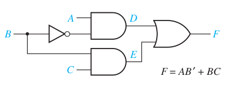
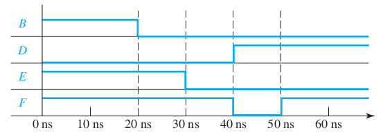

Announcments
-
Homework 3 is due on Sept 27th, Monday before class.
Hazards: Ex1

Assume all gates have a propagation delay of 10ns.
-
Identify the transition when static 1 hazard will happen,
-
draw the corresponding timing diagram,
-
and modify the circuit to hazard free circuit.
Hazards: Ex1 Soln
\[ f = A\bar{B} + BC \]
| \(\bar{A}\) | \(A \) |
| \(\bar{B}\) | \(B \) | \(\bar{B}\) |
| \(\bar{C}\) |
0 | 0 | 0 | 1 |
| \(C\) |
0 | 1 | 1 | 1 |
-
Identify adjacent non-overlapping terms
-
Identify the variable that is transitioning between them.
-
Identify the longer path of the circuit with that variable.
-
For a SOP circuit, the transition is that makes to 0->1 for longer circuit and 1->0 for shorter circuit.

| \(\bar{A}\) | \(A \) |
| \(\bar{B}\) | \(B \) | \(\bar{B}\) |
| \(\bar{C}\) |
0 | 0 | 0 | 1 |
| \(C\) |
0 | 1 | 1+ 1 | 1+1 |
Hazards: Ex2
Propagation delay of NOT gate=3 ns, AND/OR gate=5 ns
\[ F = (A + C)(\bA+\bD)(\bB+\bC+D)\]

Multi-level synthesis
-
SOP and POS are two level circuits
-
Fan-in is the number of inputs to a gate
-
Two-level circuits have higher fan-in, but smaller propagation delays.
-
Fan-in is typically limited by the technology used.
Approaches Multi-level synthesis
-
Factorization
-
Functional decomposition
Factorization Ex1
\[ f = ABC + ABD + \bar{A}\bar{B}C \]
Factorization Ex2
\[f_1 = ABD + CD \]
\[f_2 = AB\bar{D} + C \bar{D} \]
Functional decomposition Ex1
\[ f = \bx_1 x_2 x_3 + x_1 \bx_2 x_3 + \bx_1 \bx_2 x_4 + x_1 x_2 x_4 \]
Functional decomposition Ex1
\[ f = \bx_1 x_2 x_3 + x_1 \bx_2 x_3 + \bx_1 \bx_2 x_4 + x_1 x_2 x_4 \]
| | \(\bar{x}_1\) | \(x_1 \) |
| | \(\bar{x}_2\) | \(x_2 \) | \(\bar{x}_2\) |
| \(\bar{x}_3\) | \(\bar{x}_4\) |
0 | 0 | 0 | 0 |
| \(x_4\) |
1 | 0 | 1 | 0 |
| \(x_3\) |
1 | 1 | 1 | 1 |
| \(\bar{x}_4\) |
0 | 1 | 0 | 1 |
Functional decomposition Ex2
\[ f = \sum m(0, 6, 8, 4) \]
| | \(\bar{x}_1\) | \(x_1 \) |
| | \(\bar{x}_2\) | \(x_2 \) | \(\bar{x}_2\) |
| \(\bar{x}_3\) | \(\bar{x}_4\) |
1 | 0 | 0 | 1 |
| \(x_4\) |
0 | 0 | 0 | 0 |
| \(x_3\) |
0 | 0 | 0 | 0 |
| \(\bar{x}_4\) |
0 | 1 | 1 | 0 |